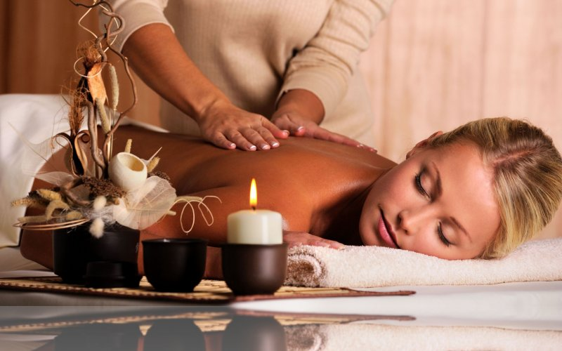
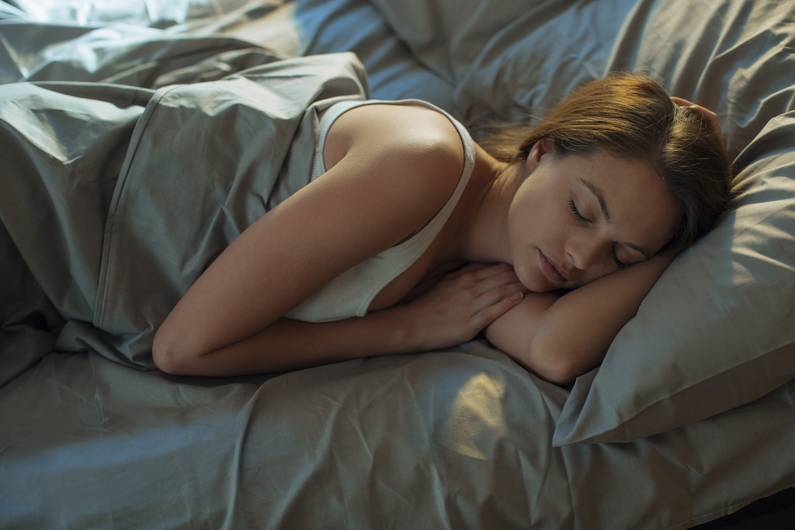

Erholung
Kultur...
Wer gerne Musik hört, ins Theater geht, ein gutes Buch liest oder sich Filme anschaut, findet dabei gleichzeitig Ruhe und Inspiration.Aktivität...
Manch einer wird ganz hibbelig, wenn er auf dem Sofa liegt. Basteln, werken, Gartenarbeit, malen, musizieren oder kochen können gute Wege sein, um besonders aktiven Menschen eine Form der Entspannung zu bieten.Gesellschaft...
Ein soziales Engagement, Singen im Chor oder spielerische Aktivitäten lenken ab vom grauen Alltag und sorgen für einen interessanten Austausch mit anderen.Wellness...
Der Klassiker für alle, die sich gerne verwöhnen lassen. Kerzen, Duftlampen, ein ausgiebiges Bad oder ein Spa-Besuch sind Balsam für die Seele. Oder ganz einfach: ein Spaziergang barfuss auf Naturböden.
Bedeutung des erholsamen Schlafs:
Für Erwachsene wird eine tägliche Schlafdauer von 7 bis 9 Stunden empfohlen. Studien zeigen, dass dies die tägliche Schlafdauer ist, die es Erwachsenen nachweislich ermöglicht, am nächsten Tag vollständig ausgeruht und produktiv zu sein. Darüber hinaus hat sich gezeigt, dass diese Schlafdauer Gesundheit und Wohlbefinden optimal unterstützt.
Es gibt keine „perfekte“ Schlafdauer, die für alle das Richtige wäre. Der Schlafbedarf variiert von Person zu Person und basiert auf zahlreichen Faktoren wie Alter, Erbanlagen, Umgebung und Verhalten. Die Anzahl der Stunden Schlaf, die man benötigt, hängt auch von der Qualität des Schlafs ab. Fühlt man sich tagsüber wach und ist in der Lage, sein bestes zu geben, dann weiß man, das man gut schläft.
Tipps...
- Stelle einen Schlafplan für die ganze Woche auf
- Geniesse die Morgensonne
- Bewege dich tagsüber
- Wähle eine Matratze, die für dich geeignet ist
- Prüfe deinen Koffeinkonsum
- Sorge für eine gute Schlafhygiene
- Führe eine digitale Speerstunde ein
- Mache das Bett zur exklusiven Schlafzone
- Gehe erst dann ins Bett, wenn du wirklich, wirklich müde bist
- Stoppe das Gedankenkarussell
